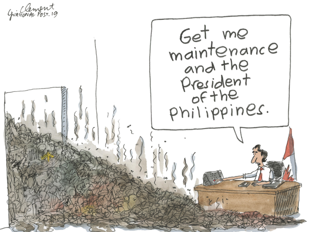

C’est dans les années 1980 aux États-Unis que les premières études sur le racisme environnemental ont été faites et il a été remarqué que les communautés afro-américaines ainsi que les autres minorités et habitants des secteurs pauvres avaient davantage de chance de résider à proximité de manufactures, de dépotoires ou encore des sites d’enfouissement de matières dangereuses (Séguin & Apparicio, 2013 ; Lumen : Sociology, s.d.). Depuis, les chercheurs ont analysé plus en profondeur le sujet et différentes définitions et types de justice ont été développés.

Le terme racisme environnemental est utilisé afin de décrire des situations discriminatoires de natures environnementales envers certains groupes d’individus engendrant des problèmes de santé (Lumen : Sociology, s.d.). Il est important de noter que ces discriminations peuvent être volontaires, mais elles sont surtout non-intentionnelles (Fondation canadienne des relations sociales, 2015). Toutefois, après un préjudice, l’inaction d’un gouvernement peut être mal perçue, comme il a été le cas avec l’eau contaminée de la ville de Flint au Michigan. Le contexte nord-sud a lui aussi été analysé et des disparités outrageuses ont été révélées. Aujourd’hui, avec la question des changements climatiques, le racisme environnemental a aussi été lié au réchauffement climatique et à ses effets et il a été montré que les communautés présentant des difficultés financières sont les moins résilientes face aux changements climatiques. De plus, dans bien des cas, ce sont rarement ceux affectés par la pollution qui sont les vecteurs premiers de celle-ci.
Basées sur ces études, plusieurs cartes ont été faites et nous avons pensé qu’il serait pertinent d’évaluer ce même phénomène ici au Canada. Ainsi, ce site a pour but de mettre en lumière le racisme environnemental au Canada afin d’établir des mesures et lois permettant d’atteindre une justice environnementale à travers le pays.
Sur ce site, vous trouverez deux différentes cartes. Les deux d’entre elles présentent les mêmes aspects sociaux, comme les revenus par district ou encore les minorités visibles par district, mais la première est axé sur la pollution alors que la seconde sur les phénomènes naturels (qui peuvent être causés par les activités humaines). Nous avons aussi ajouté les données de ce qu’appelle le gouvernement canadien Climate Action, un programme de financement fédéral octroyé à des projets visant la prévention et la mitigation des changements climatiques (Gouvernement du Canada, 2019).